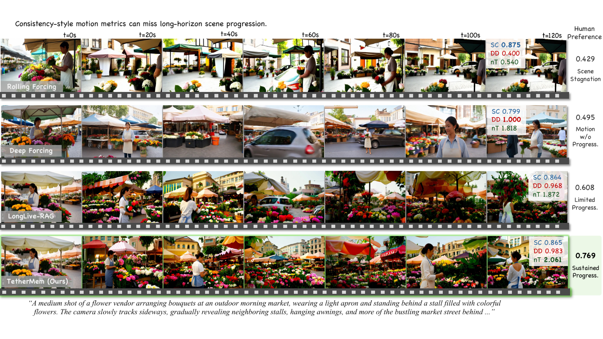
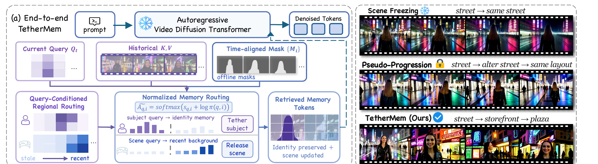
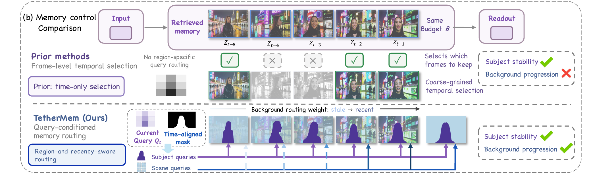
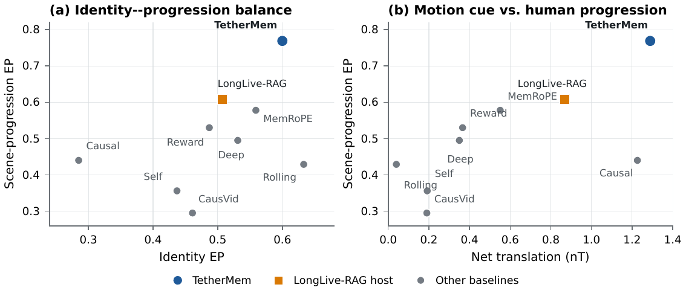
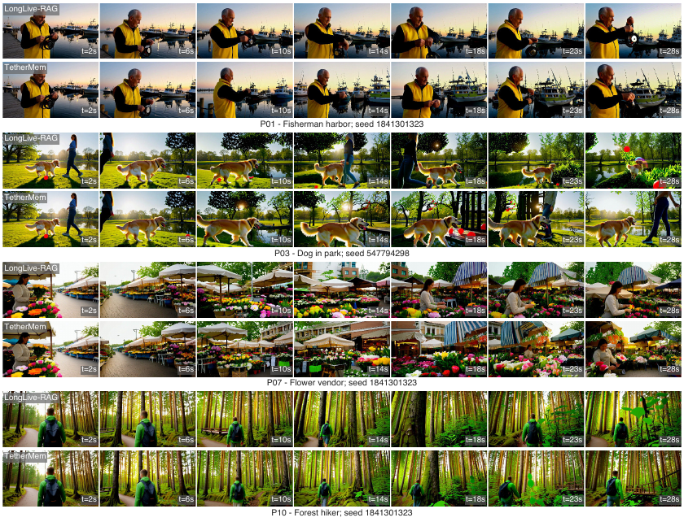

Ãq,i = softmax(sq,i + log πn(q,i))
The prior changes selection while attention remains normalized.
Long-horizon autoregressive video generation
Query-aware memory routing preserves identity-bearing history while allowing backgrounds, viewpoints, and scene states to keep evolving.

Figure 1. A shared 120-second timeline exposes distinct failure modes: stagnation, incoherent motion, limited progression, and sustained scene evolution.
Method
TetherMem places a positive spatiotemporal routing prior inside attention normalization. Subject queries retain identity-bearing history; scene queries preferentially read recent background states.
The prior changes selection while attention remains normalized.
Same-region paths stay open; cross-region reads are softened.
Background queries favor recent scene states.
Current queries, retrieved history, and a time-aligned subject track meet at normalized memory routing. The subject is tethered; the scene is released.

Frame-level selection decides which memories survive. TetherMem instead routes subject and scene queries differently within the same retrieved budget.

Evidence
Human preference distinguishes coherent scene development from raw motion. TetherMem occupies the high-identity, high-progression region, while strong motion alone is not sufficient.

Interactive demos
Four matched 30-second comparisons show distinct long-horizon behaviors without loading a 120-second file. Choose a scene, then play both streams from the same time.
30 seconds · P07 flower vendor
In this matched rollout, Rolling-Forcing stays close to the opening flower stall while TetherMem reveals new stalls, pedestrians, and street context as the camera moves sideways.
30 seconds · P01 fisherman harbor
The two videos share the P01 prompt and seed. Causal-Forcing darkens and loses scene detail in the later window; TetherMem retains the fisherman, his action, and the evolving harbor.
30 seconds · P03 dog in park
This matched static-camera case separates subject continuity from uncontrolled scale drift. TetherMem preserves the dog while introducing new, coherent park context.
30 seconds · P04 cross-stack
This matched comparison isolates the routing intervention on Deep-Forcing. The outputs remain close overall, demonstrating cross-stack compatibility.
Qualitative trajectories
Matched trajectories sample the same backbone pair across multiple prompts and seven timestamps over the 30-second evaluation window.

Citation
The arXiv identifier will be inserted here after submission.
@article{li2026tethermem,
title = {Tether the Subject, Release the Scene:
Query-Aware Memory Routing for Long-Horizon
Autoregressive Video Generation},
author = {Li, Chen},
year = {2026},
note = {arXiv preprint}
}